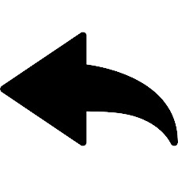
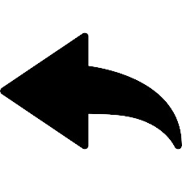

Rreth Pazarit të Vjetër
Pazari i Vjetër i Gjirokastrës është një treg historik që daton nga epoka osmane. I vendosur në zemër të qytetit, ai ka qenë një qendër tregtie, kulture dhe artizanati për shekuj.
Historia
Fillimisht i ndërtuar në shekullin XVII, pazari ka pësuar transformime të ndryshme për shkak të zjarreve dhe rindërtimeve. Pavarësisht nga këto ndryshime, ajo ruan sharmin e saj tradicional, me rrugë me kalldrëm dhe ndërtesa karakteristike me çati guri.
Atraksione Kryesore
- Suvenire të punuara me dorë dhe mallra tradicionale shqiptare.
- Artizanët vendas që paraqesin punime druri, qeramikë dhe tekstile.
- Kafenetë dhe restorantet tradicionale që shërbejnë kuzhinë autentike.
- Arkitekturë e bukur e epokës osmane dhe ndërtesa historike.
- Një atmosferë e gjallë tregu me shitësit vendas dhe shfaqjet në rrugë.
Fakte Interesante
Pazari i Vjetër është i famshëm për dizajnin osman të ruajtur mirë dhe rolin e tij në lidhjen e tregtarëve nga rajone të ndryshme. Shumë nga dyqanet janë biznese familjare të transmetuara për breza të tërë.
Ajo është gjithashtu një tërheqje e madhe turistike, duke u ofruar vizitorëve një vështrim në trashëgiminë e pasur të Shqipërisë dhe zejtarinë lokale.
Informacion për Vizitorë
Pazari është i hapur çdo ditë, me kohën më të mirë për t'u vizituar duke qenë në mëngjes ose pasdite vonë. Turet e guiduara janë në dispozicion, dhe është një destinacion i domosdoshëm për këdo që eksploron Gjirokastrën.
 
